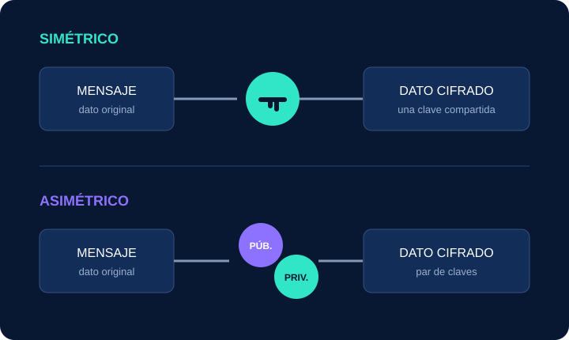

⌁
Confidencialidad
Impide que personas no autorizadas comprendan la información, incluso si logran interceptarla.
SEGURIDAD DIGITAL · GUÍA INTRODUCTORIA
Descubre cómo las matemáticas convierten datos legibles en mensajes protegidos y por qué este proceso sostiene la confianza en Internet.
MENSAJE ORIGINAL
HOLA MUNDO
MENSAJE CIFRADO
CONCEPTOS ESENCIALES
La criptografía protege la información mediante algoritmos y claves. Estos son sus pilares principales.
Impide que personas no autorizadas comprendan la información, incluso si logran interceptarla.
Permite comprobar que un mensaje no fue modificado durante su almacenamiento o transmisión.
Ayuda a verificar la identidad del emisor y el origen legítimo de los datos recibidos.
DOS FORMAS DE PROTEGER DATOS
Ambos modelos cifran información, pero administran las claves de manera diferente.

EN LA VIDA COTIDIANA
HTTPS cifra la comunicación entre el navegador y el servidor para proteger los datos en tránsito.
El cifrado de extremo a extremo limita el acceso al contenido a quienes participan en la conversación.
Relacionan un documento con su firmante y permiten detectar alteraciones posteriores.
EXPERIMENTA CON UN CIFRADO CLÁSICO
Escribe un mensaje y elige cuántas posiciones quieres desplazar las letras. Por ejemplo, con un desplazamiento de 3, la A se convierte en D.
Este método sirve para aprender cómo funciona la sustitución de letras; no protege mensajes reales. El ejemplo usa A–Z y conserva espacios, números, tildes y la Ñ.
Ver el proyecto que inspiró esta demostración en GitHub ↗APRENDE EN VIDEO
CONTINÚA APRENDIENDO